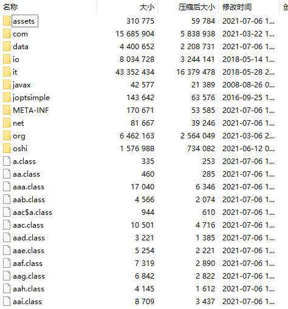
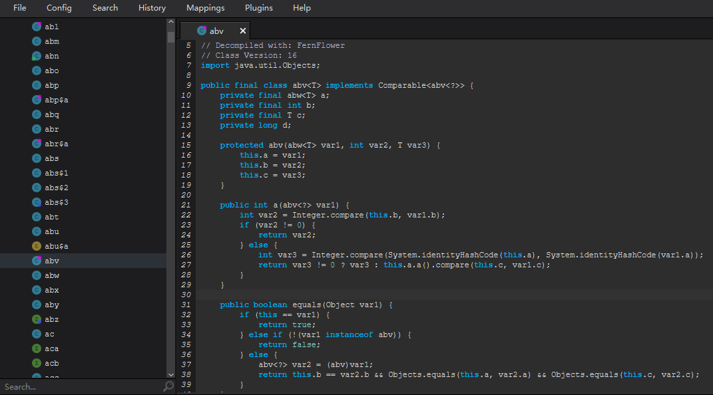
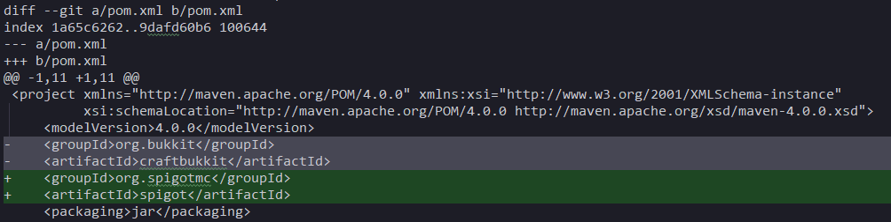

本文介绍 Arclight 和其他常见 Minecraft 服务端原理及关键技术。
文章信息密度较高，读者请善用搜索引擎。
起因：我们想 …
在 Minecraft 支持多人模式后，玩家们发现了其面向更多用户时存在的不足。这可能是权限管理的缺失，易用性不足，或是缺少一些娱乐性的功能。
面对这些不足，开发者们自然会想到一件事：改代码，可是 Minecraft 是一款商业程序，并不向用户开放源代码，我们也不能直接发布这些代码。
可以说，这些商业程序的限制决定了 Minecraft 模组/服务端特殊的开发流程。
经过长时间的摸索，社区逐渐形成了两种主流的「改代码」方式。
较为常见的方式是，反编译 Minecraft 并在此基础上修改添加功能，代表性的项目有：
- CraftBukkit, Spigot, Paper 和它们的衍生服务端。
- MinecraftForge
- MCPC, Cauldron, Thermos 和大部分 Forge Bukkit 混合服务端。
另一种方式是，在 Minecraft 服务端启动时动态地修改加载的代码，代表性的项目有：
-
Minecraft 1.12 及之前版本的 MinecraftForge 同时利用了这两种技术，即对反编译的源码进行修改，并在启动时加载这些修改。该项目同时自带一些「CoreMod」用于运行时修改代码，例如 AccessTransformer。
反编译与反混淆
本文不提供 Minecraft 游戏文件分发，所述内容仅供学习参考。
Minecraft 作为一款商业游戏，使用了混淆技术来保护其不被轻易地盗用。我们以 1.17.1 版本为例，可以在 该链接 下载到对应的服务端文件。
打开这个 JAR 文件后，我们可以看到以下内容：

其中的文件夹是 Minecraft 引用的第三方库文件和其自身使用的资源文件，而剩余的 .class 文件即为 Minecraft 的代码文件。
现在我们遇到了第一个问题，.class 文件并不是源代码，不能直接阅读。对此，社区会使用反编译器进行代码文件的逆向工程，常用的反编译器为 FernFlower，被上文介绍的所有基于反编译修改的项目采用。
Recaf 提供了 FernFlower 的图形界面程序。
我们拿 abv.class 举例，反编译后如下：

显而易见我们遇到了第二个问题，所有的方法和字段都被混淆了，需要一种方法来将它变得人类可读。例如，上文的 abv 实际上的类名为 Ticket。
在 Minecraft 1.14.4 以前，社区采用的办法是，根据自身的开发经验，猜出或者说给出这些类混淆前的名称。类文件中的字符串常量、继承和调用关系无不暗示着这些类本来的用途，经验丰富的开发者便可以通过这些蛛丝马迹猜出它们本来的名称。而这些从混淆后到混淆前的名称的映射，我们称之为混淆表或者映射表。
社区一共总结了三套常用的混淆表，它们分别是
自 Minecraft 1.14.4 起，微软开始公布 Minecraft 的官方混淆表，声称其能帮助 Modding 社区更好发展。官方映射已被 Arclight、Forge、Sponge 和 Paper 项目采用，Spigot 项目部分采用了官方映射的字段名用于开发。Fabric 侧允许用户使用官方表，但并非默认。
因为微软仅公布了类名、方法名与字段名的混淆数据，并未公布方法参数名称，因此 Parchment 项目成立，仅提供参数名称。
反混淆技术的具体实现细节位于反混淆的实现节。
对于使用反编译后的代码修改进行开发的项目，因为反编译器不够完善，反编译的代码通常充满错误而不能直接编译，我们还需要一个额外的步骤：手动修复反编译的错误。
对于 Forge 项目，所有的修复代码和工具提供自 MCPConfig 项目，而该项目的前身是 ModCoderPack。MCPConfig 项目包含了每个反编译源代码文件的 patch。对于 Spigot 项目，这些修复直接包含在功能实现的 patch 中。
避免分发官方代码
分发问题通常只出现在使用反编译代码进行修改的项目上。知名的 CraftBukkit 项目因为直接提供修改后的 Minecraft 代码和二进制文件而受到 DMCA Takedown 请求，随后社区对这种情形进行了规避。
一共有两种情况可能会涉及到 Minecraft 代码文件的分发：通过网络与他人共同开发一个项目，以及将这个项目最终分发给用户。社区对这两种情况都进行了规避。
在开发阶段，互联网上公开发布的是 patch 文件，包含了对源码修改的描述。patch 文件如下所示：

该文件描述了 pom.xml 文件从第一行开始后的 11 行内，应该删去哪些内容再加入哪些内容。通过 patch 文件，开发者可以避免发布整个源代码，而仅仅发布修改的片段。
patch 文件可以通过比较修改前和修改后的文件来生成，也可以用 patch 文件结合修改前的文件生成修改后的文件。
在 Minecraft 1.13 以前，Forge 模组在开发前需要输入 gradle setupDecompWorkspace，该命令实际上便是进行了 Minecraft 文件的下载、反混淆、反编译、源码修复与应用 patch 文件。Minecraft 1.13 后 Forge 团队优化了工具链，从此开发者不需要手动运行这个任务了。
而面向最终用户，社区同样不能将他们修改过的游戏 JAR 文件直接发布。
Forge 项目与 Paper 项目选择发布一种类似 patch 文件的 binpatch，描述了对于二进制文件的修改内容，从而避免了直接分发。
Spigot 项目选择了另一种方式，发布 BuildTools 让用户自行构建最终的 JAR 文件。BuildTools 隐藏了所有的开发环境细节，使得任何一个安装了 Java 的普通人可以通过一个命令构建出 Spigot，而他只需要等一会儿。
事件模型
我们已经知道了怎么修改 Minecraft 的代码了，接下来继续关注如何实现功能，并向其他开发者开放。本文只关注服务端侧的功能。
对原版代码的修改，大部分情况下可以概括成「在某一行前执行我们的代码，修改一些变量，决定是否继续执行」，比如：
- 让玩家不能使用
/talk命令：在执行/talk命令的代码前，决定不执行接下来的代码 - 让玩家用腐肉烧出皮革：在熔炉熔炼结束的代码前，修改产物为皮革，并继续执行
这样的模型被归纳为事件模型。每个事件提供了在事件发生时获取上下文信息（比如执行的命令是 /talk），执行外部代码，修改上下文和取消执行的能力。
上文介绍的几乎所有项目都采用了事件模型为第三方开发者提供拓展和修改 Minecraft 自带逻辑的 API。Fabric 项目提供了 Callback 作为 API，也可以看做另一种形式的事件。
通过提供丰富的事件，例如玩家加入服务器的事件、玩家攻击生物的事件等，各大开发框架得以更好的为第三方开发者服务。一个统一的事件同样避免了多个第三方开发者同时修改一个地方的代码而引入潜在的冲突。
实现功能：从类说起
对于基于反编译修改的项目来说，实现一个事件很简单：在对应的代码出写一行调用事件的代码就可以了。
而对于运行时修改的项目，情况就变得复杂一些，有两个东西必须介绍：类加载器与类修改技术。
类是如何加载的呢？以 URLClassLoader 为例，在进行类加载时，类加载器首先查找已经加载的类，如果不存在则请求父加载器加载，如果不存在则尝试自己加载。这样的加载模型叫做双亲委派，伪代码如下：
Class<?> loadClass(String name) throws ClassNotFoundException {
// First, check if the class has already been loaded
Class<?> c = findLoadedClass(name);
if (c == null) {
try {
c = parent.loadClass(name);
} catch (ClassNotFoundException e) {
// ClassNotFoundException thrown if class not found
// from the parent class loader
}
if (c == null) {
// If still not found, then invoke findClass in order
// to find the class.
c = findClass(name);
}
}
return c;
}如果我们可以在「自己加载」这一阶段，对即将加载的类文件进行一些修改，便可以达成「改代码」的目标。于是我们可以写出这样的代码：
Class<?> findClass(String name) throws ClassNotFoundException {
byte[] bytes = loadFromDisk(name);
if (bytes == null) {
throw new ClassNotFoundException(name);
}
bytes = transformClass(bytes);
Class<?> c = defineClass(name, bytes);
return c;
}defineClass 将字节流的类文件转换为内存中可用的 Java 类，这一过程由 Java 虚拟机（JVM）执行，我们不需要知道其原理也无法干涉。自然，奥秘包含在 transformClass 方法中，至此我们终于可以开始介绍类修改技术。
尽管不像 .java 文件一样可供程序员直接阅读，.class 是有规范格式和结构的文件。本文不对类文件格式做详细介绍，仅描述我们关心的地方。
我们可以使用 javap -c abv.class 查看前文所述 abv 类的类文件内容（部分内容已省略）：
public final class abv<T extends java.lang.Object> implements java.lang.Comparable<abv<?>> {
...
public int a(abv<?>);
Code:
0: aload_0
1: getfield #33 // Field b:I
4: aload_1
5: getfield #33 // Field b:I
8: invokestatic #47 // Method java/lang/Integer.compare:(II)I
...
62: ireturn
...类文件中我们最关心的「逻辑」存在于方法的 Code 属性中，为操作码（Opcode）序列的形式。在反编译修改的项目中，我们说「在某一行插入我们自己的代码」，对应到类文件也就是在某个 Opcode 处加入我们自己的 Opcode 序列。
操作类文件时，我们通常使用 ASM 库解析 .class。ASM 库有两套面向开发者的 API，通常称为 Core API 和 Tree API。Core API 使用 Visitor 模式，这种编程范式尤其适合对固定结构的数据提供多种操作。Tree API 相对易于理解，也可能更易于操作，同时性能相较 Core API 略低。
接下来两个小节将会展示对于类修改的基本理念。
反混淆的实现
前文所述，反混淆可以将 abv 变成 Ticket，那么这是怎么做到的呢？
我们首先介绍类文件的「签名」，也即类型在 JVM 中的表示方法。
| 类型 | 签名 |
|---|---|
| boolean | Z |
| byte | B |
| char | C |
| short | S |
| int | I |
| long | J |
| float | F |
| double | D |
| java.lang.Object | Ljava/lang/Object; |
| T 的数组类型 | [T |
| 方法 | (参数签名)返回类型签名 |
JVM 中，引用类型的内部表示（internal name）以斜线（/）分割，签名则是在其前后加上 L 和 ;。方法的签名则是在括号内写上所有参数签名的拼接，最后加上返回值的签名。因此，方法
String[][] foo(String s, double d, int[] array)的类型签名为
(Ljava/lang/String;D[I)[[Ljava/lang/String;因此，如果我们想把 abv 翻译成 net.minecraft.server.level.Ticket，就需要将类文件中所有的 Labv; 替换为 Lnet/minecraft/server/level/Ticket;。
同时，我们也想对字段和方法进行重命名，其原理是类似的，但是我们需要介绍几条特定的 Opcode。
对于字段，我们会有 GETFIELD, PUTFIELD, GETSTATIC, PUTSTATIC 指令，分别用来读取写入普通字段和静态字段的值。例如，对于 abv 类中的 int b 字段，我们要将其命名为 ticketLevel，则需要将所有的
GET/PUTFIELD abv b:I翻译成
GET/PUTFIELD net/minecraft/server/level/Ticket ticketLevel:I类似的，对于方法，我们有 INVOKEVIRTUAL, INVOKESTATIC 等五条指令用来调用方法，将其对应地替换即可。
如果使用 ASM 库来实现这样的功能，我们可以写出这样的代码（并不完整！）：
class RemapVisitor extends ClassVisitor {
@Override
public void visit(int version, int access, String name, String signature, String superName, String[] interfaces) {
if (name.equals("abv")) {
super.visit(version, access, "net/minecraft/server/level/Ticket", signature, superName, interfaces);
} else {
super.visit(version, access, name, signature, superName, interfaces);
}
}
@Override
public MethodVisitor visitMethod(int access, String name, String descriptor, String signature, String[] exceptions) {
return new RemapMethodVisitor(Opcodes.ASM9, super.visitMethod(access, name, descriptor, signature, exceptions));
}
class RemapMethodVisitor extends MethodVisitor {
@Override
public void visitFieldInsn(int opcode, String owner, String name, String descriptor) {
if (owner.equals("abv") && name.equals("b")) {
super.visitFieldInsn(opcode, "net/minecraft/server/level/Ticket", "ticketLevel", descriptor);
} else {
super.visitFieldInsn(opcode, owner, name, descriptor);
}
}
}
}实际使用中，一般使用一个 Map 保存所有可能的映射。
对于「所有可能的映射」，社区一般使用一个文本文件进行表示，而这个文本文件衍生出了很多种格式：
TSRG，由 Forge 项目使用SRG及其衍生CSRG，由 Forge 项目和 Spigot 项目使用TINY，由 Fabric 项目使用
以 TSRG 格式举例，对于 abv 类的所有映射，有以下内容：
abv net/minecraft/server/level/Ticket
a type
b ticketLevel
c key
d createdTick
<init> (Labw;ILjava/lang/Object;)V <init>
a ()Labw; getType
a (Labv;)I compareTo
a (J)V setCreatedTick
b ()I getTicketLevel
b (J)Z timedOut
compareTo (Ljava/lang/Object;)I compareTo
equals (Ljava/lang/Object;)Z equals
hashCode ()I hashCode
toString ()Ljava/lang/String; toString以上介绍的反混淆技术，包括对类文件的处理和映射表文件格式的读取，社区都提供了对应的工具。最常用的库是 SpecialSource，提供了上述所有功能的支持，被广泛的使用于除了 Fabric 的几乎所有项目中。Fabric 社区使用 tiny-remapper。Cadix Dev Team 提供了一系列用于各种字节码操作的库，Lorenz 可用于表示映射，Atlas 可用于反混淆类文件。
除了对类文件进行反混淆外，社区同样开发了对源代码进行反混淆的软件，如 Srg2Source 和 Mercury。
禅与代码注入技术
反混淆仅仅做了对类已有代码的重命名，在大多数情况下，这并不能满足开发者对添加功能的需要。
我们对一个常见的功能举例分析：每 Tick 执行任务。理想情况下，我们只需要在服务端的大循环的任意一个地方插入一行 MyTask.run() 就可以了。
假设服务端的循环如下（经过修改）：
public class MinecraftServer {
protected void runServer() {
while (this.running) {
long i = Util.getMillis() - this.nextTickTime;
if (i > 2000L && this.nextTickTime - this.lastOverloadWarning >= 15000L) {
long j = i / 50L;
LOGGER.warn("Can't keep up! Is the server overloaded? Running {}ms or {} ticks behind", i, j);
this.nextTickTime += j * 50L;
this.lastOverloadWarning = this.nextTickTime;
}
this.nextTickTime += 50L;
this.tickServer(this::haveTime);
this.waitUntilNextTick();
}
}
}我们可能就会想在 this.tickServer(this::haveTime); 前面插入自身的任务调用代码。这个插入调用的代码和上文相当类似（仍然有省略！）：
class TaskVisitor extends ClassVisitor {
@Override
public MethodVisitor visitMethod(int access, String name, String descriptor, String signature, String[] exceptions) {
MethodVisitor mv = super.visitMethod(access, name, descriptor, signature, exceptions);
if (name.equals("runServer") && descriptor.equals("()V")) {
return new TaskMethodVisitor(Opcodes.ASM9, mv);
} else {
return mv;
}
}
static class TaskMethodVisitor extends MethodVisitor {
@Override
public void visitMethodInsn(int opcode, String owner, String name, String descriptor, boolean isInterface) {
if (name.equals("tickServer")) {
super.visitMethodInsn(Opcodes.INVOKESTATIC, "MyTask", "run", "()V");
}
super.visitMethodInsn(opcode, owner, name, descriptor, isInterface);
}
}
}我们便出色的完成了「插入代码」的工作 —— 但是！当要插入的代码逐渐变多，为每个调用单独写两个类的工作量变的令人无法接受。社区不断有简化这些重复劳动的尝试，最终出现了一个叫 Mixin 的项目。
使用 Mixin 后，对于上文的代码，我们只需要写：
@Mixin(MinecraftServer.class)
public class MinecraftServerMixin {
@Inject(method = "runServer", at = @At(value = "INVOKE",
target = "Lnet/minecraft/server/MinecraftServer;tickServer(Ljava/util/function/BooleanSupplier;)V"))
void beforeTickServer(CallbackInfo ci) {
MyTask.run();
}
}而这个代码本身可读性比两个 Visitor 类也高出不少：注入（Inject）方法 runServer，目标（target）为 MinecraftServer:tickServer 的方法调用（INVOKE）。
Mixin 起源于 LiteLoader 项目，皆由 Mumfrey 开发，随后转入 Sponge 社区并被完整采用。Sponge 的两个服务端可能是最先采用 Mixin 的大型项目。
本文无意介绍 ASM 与 Mixin 具体的使用方式和更多更复杂的类文件修改技巧。
不同的运行时环境：重混淆
作为一个商业程序（似乎已经说过很多遍了），Minecraft 发布时被混淆。混淆不仅使得用户很难查看它的代码，还带来了一个新的问题：不同版本之间，同一个类、同一个方法可能有不同的混淆名字。
针对这一问题，Forge 和 Fabric 不约而同地采用了一个做法：为相同的类/方法分配相同的名字（序号）。天哪，我们已经有三套名称了！它们分别是：Mojang 发布的混淆名，跨版本稳定的中间名，开发者编写代码使用的人类可读名。
在 Forge 侧，这样的三套名称分别被称为 notch name, srg name 和 mcp name，所有的 srg 文件位于 MCPConfig 项目；在Fabric 侧，后两套为 Intermediary 和 Yarn。
对于不同版本之间不同混淆名的类，我们需要一个工具来对它进行匹配。Forge 社区使用 DePigifier。
对于 Forge 和 Fabric，Minecraft 服务器运行时，实际使用的名称便是这一套中间名。
采取中间名作为实际运行的环境还有另一个好处，不同开发者使用不同的人类可读名开发也可以同时运行（MCP/官方映射/Yarn/?）。同时中间名带来另一个麻烦，开发环境和运行环境完全不一致，编译完成后还需要一次额外的重混淆。
至此，我们终于可以完整地总结 Forge 和 Paper 这样的反编译修改项目是如何开发的了：
- 我们下载了
notch name的 minecraft_server.1.17.1.jar - 使用 MCPConfig 项目中的 notch->srg 混淆表反混淆它
- 反编译，并用 MCPConfig 中的 patch 修复它
- 使用 Srg2Source 把修复完成的源代码反混淆成 MCP 名
- 修改源代码，添加功能，并生成 patch 文件
- 编译代码，将编译结果重混淆为中间名
- 与原始的服务端 JAR 文件比较，生成一个 binpatch 文件
- 将包含 binpatch 文件的安装器发布给用户，用户得以启动
至于像 Sponge 这样的运行时修改项目，则是这样：
- 前两步仍然一致
- 选择一个人类可读名，继续反混淆
- 基于这个反混淆的结果，进行开发；特别地，Sponge 采用编写 Mixin
- 编译，重混淆，发布
- 用户启动时，程序动态地修改类
混合服务端
本人是 Arclight 服务端作者，这里使用 Arclight 举例
混合服务端究竟做了什么呢？
答案是明显的：在 B 上实现 A 的所有功能。这样功能的实现可以通过任何一种「改代码」手段来完成：Arclight 使用 Mixin，而大多数 Forge Bukkit 服务端使用反编译修改。
混合服务端还需要处理一件事情，即目标环境和原环境的映射名称可能完全不同。例如，Forge 的运行时名称是 SRG，而 Spigot 的运行时名称是 BuildData 中的名称。对于不同名称的处理可以使用上文所述反混淆/重混淆手段。
对于从原环境到目标环境的映射，我们需要额外生成一套映射表；也就是说，如果 Forge 的映射表是 notch->srg，而 Spigot 是 notch->spigot，我们需要生成 spigot->srg 的映射。而由于 Java 中存在返回类型协变、方法参数协变逆变、接口方法由实现类的父类方法隐性实现等等因素，导致生成这样的映射表并不是一件简单的事。
Lorenz 库可以合并两个映射表并输出，尽管其并不完善。目前来说，可能只有 arclight-gradle-plugin 有能力正确地生成这样的映射表。
尽管如此，上述手段无法处理一种情况，也就是 Java 的反射技术。
Bukkit API 的目标是用其提供的版本无关接口，完成所有对 Minecraft 服务器的控制，但是总有或多或少的理由，开发者绕过这套 API，去直接调用 Minecraft 本身的代码。
而由于 Spigot 系列服务端会在构建时将 Minecraft 自带类的包名混淆成如同 net.minecraft.server.v1_17_R1 的形式，并且每个版本都不同，所以大部分开发者逐渐总结了一套「接触」Minecraft 原生代码的方法：
- 拿到
net.minecraft.server.v1_17_R1这样的包名 - 取出其中的版本号节，如
v1_17_R1 - 拼接出完整类名，比如
"net.minecraft.server." + version + ".EntityPlayer" - 用反射技术操作这个类
从而让一套代码可以在多个 Spigot 版本下使用。
这样的方法对于开发者自然是非常方便的，但是对于混合服务端开发者来说，处理这些代码让其正确执行就不大容易了。
Arclight 将所有反射调用进行了重定向。考虑
abv net/minecraft/server/level/Ticket
f_9421_ ticketLevel就能写出这样的代码：
static Field redirectGetField(Class cl, String name) {
if (cl.getName().equals("net.minecraft.server.level.Ticket")) {
if (name.equals("ticketLevel")) {
name = "f_9421_";
}
}
return cl.getField(name);
}同时在对应的 Field#getName 调用再转换回原本的名称就可以了。
static String redirectGetName(Field f) {
if (f.getDeclaringClass().getName().equals("net.minecraft.server.level.Ticket")) {
if (f.getName().equals("f_9421_")) {
return "ticketLevel";
}
}
return f.getName();
}同样的方法可以适用于类和方法的相关反射调用。
运行时重混淆技术还有更多有趣的话题：
- 插件动态地定义新类
- 插件在运行时编译源码
- 插件读取 Minecraft 的类文件进行处理
Arclight 都有对应的处理，文章在此按下不表，可以参考 Arclight 的源码。
拓展阅读
- xfl03 的 CoreMod 教程 —— 关于「改代码」的方法论
- Harbinger 第一节 关于 MCP 与 Forge 的介绍
- Mixin Wiki Environment 节 （英）介绍了 Mixin 是如何在运行时处理类的
- tdiant 的 Bukkit 开发教程 5-1 节介绍了一般 Bukkit 开发者处理 Minecraft 原生代码的方法
- Fabric 项目官网 （英）含有该项目工具链介绍